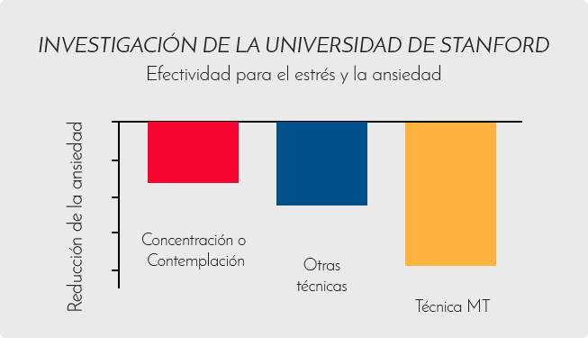

La Técnica MT es una técnica mental, sencilla y natural, practicada por mas de seis millones de personas en todo el mundo, de todas las ocupaciones, edades, religiones, niveles de educación, etc. Sus resultados generalmente se notan desde el principio. No se requiere de una preparación previa.
¡Asiste a la conferencia introductoria!Asiste a una de las tres conferencias introductorias que impartirá personalmente el Dr. Benjamín Feldman en Bosques de las Lomas, allegado colaborador de Maharishi durante 30 años en Suiza, Holanda e India; y conoce los principios de la Meditación Trascendental que te permitirán disfrutar de todo tu potencial, mejorar tu salud y tu calidad de vida.
Mucha gente nota rápidamente el efecto transformador de la MT, reportan importantes beneficios en la reducción de estrés crónico y la ansiedad, el insomnio, la hipertensión y otros trastornos relacionados con el estrés.
La Asociación Americana del Corazón (American Heart Association) anunció 47% menos incidencia de infartos al miocardio y trombosis cerebral en pacientes con enfermedades coronarias que practican la Meditación Trascendental.
¡Asiste a la conferencia introductoria!La técnica TM® resultó el doble de efectiva para el estrés y la ansiedad que otras técnicas.
La investigación analisó 146 estudios independientes y fue publicada en el Journal of Clinical Psychology.
Nada había abierto mis ojos como lo hizo la Meditación Trascendental. Me genera calma, felicidad, me da paz y tranquilidad en lo que antes era una vida caótica
- Hugh Jackman Actor"He descubierto la alegría de ser mucho más eficaz. El potencial creativo se manifiesta mucho más. Crece la intuición, se intensifica el placer de vivir, la negatividad disminuye"
- David Lynch Cineasta, fotógrafo, pintor, autor de Atrapa el Pez Dorado: Meditación, Conciencia y Creatividad"la mayoría de las enfermedades se originan por el estrés, yo quería encontrar una solución. Lleva paz a tu vida, practica la "Meditación Trascendental-"
- Lolita Ayala Periodísta y conductora de televisiónAsiste a una de las tres conferencias introductorias que impartirá personalmente el Dr. Benjamín Feldman en Bosques de las Lomas, allegado colaborador de Maharishi durante 30 años en Suiza, Holande e India; y conoce los principios de la Meditación Trascendental que te permitirán disfrutar de todo tu potencial,
mejorar tu salud y tu calidad de vida.